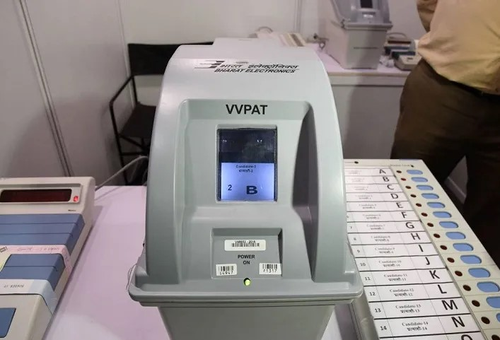
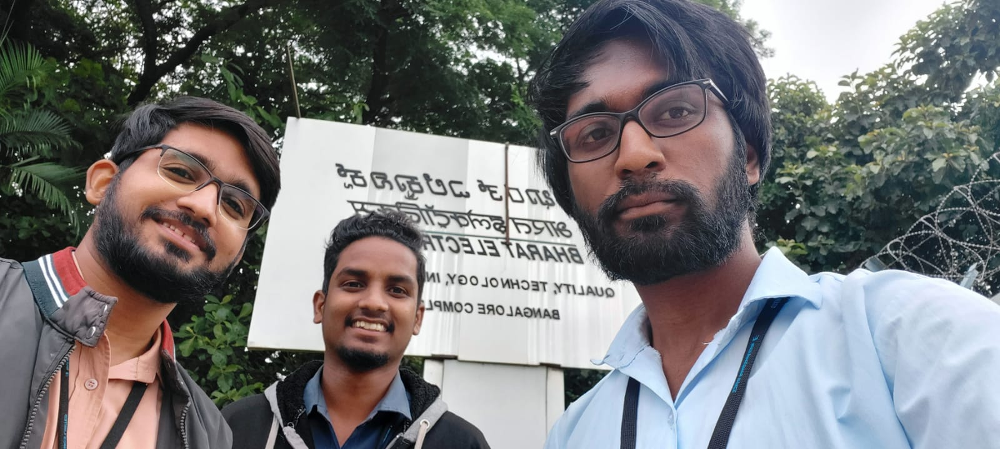
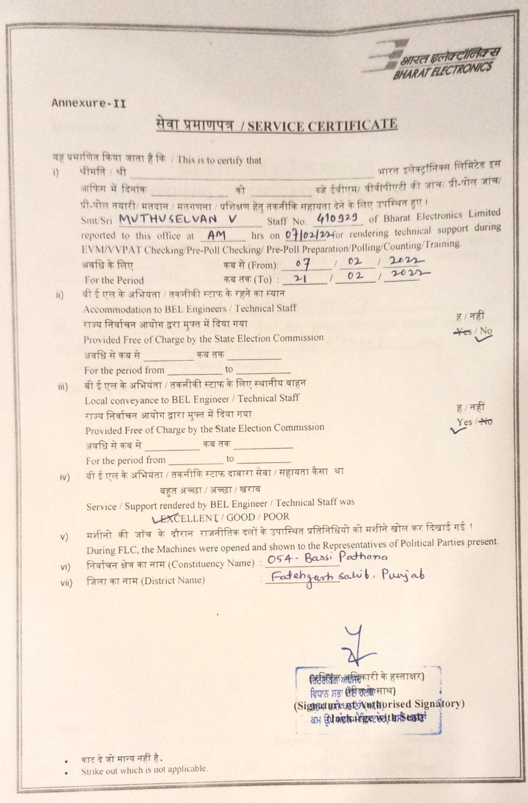
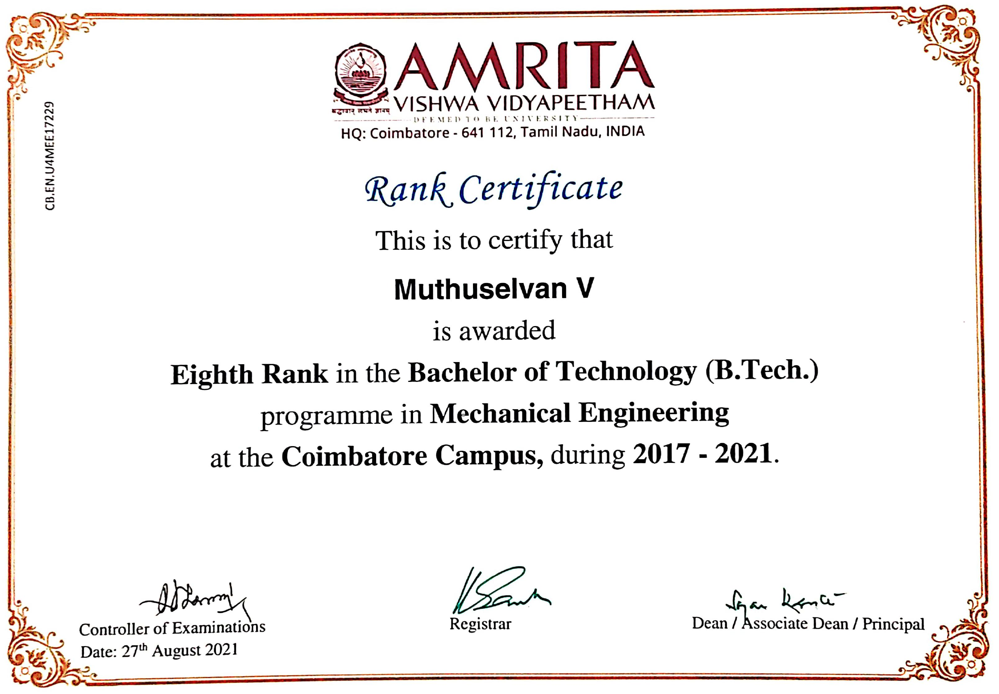

Bharat Electronics Limited, Bangalore


I transitioned into a pivotal role as a project lead in the production of Voter Verifiable Paper Audit Trail (VVPAT) devices, a sub-project of the prestigious EVM project for the 2024 Indian Parliamentary General Elections. This project carried the immense responsibility of producing a substantial target count of 1,24,000 VVPATs. I oversaw procurement, vendor relations, and production, ensuring adherence to Election Commission standards. Collaborating with Development & Engineering department, I ensured construction and assembly met specifications. My role extended to generating E-Way Bills for material transport and meticulous record-keeping in SAP. Our efforts resulted in successfully meeting VVPAT production targets, crucial for the 2024 Parliamentary General Elections.
Election Commission of India – Punjab Legislative Assembly Election Duty

In the 2022 Punjab Legislative Assembly election, I had the privilege of participating in election duty in Bassi Pathana, Punjab, India. I facilitated the conduct of mock polls, oversaw the commissioning of Electronic Voting Machines (EVMs), and efficiently coordinated with a team of officials to ensure the seamless execution of this critical electoral event. I received an excellent rating from my Election Incharge for smoothly conducting the election in the constituency I handled.
Amrita Vishwa Vidyapeetham, Coimbatore

Graduating with distinction and a CGPA of 9.38/10, I secured 8th rank in the 2021 Mechanical Engineering batch. This accomplishment reflects a strong academic foundation and consistent performance across diverse subjects, demonstrating steady effort and a commitment to learning.
Coursework: Operations Research, Numerical Methods, Probability and Statistics, Calculus and Matrix Algebra, Computer
Programming, Computational Thinking and Problem Solving
{kind=link}
{kind=link}
{kind=link}
{kind=link}